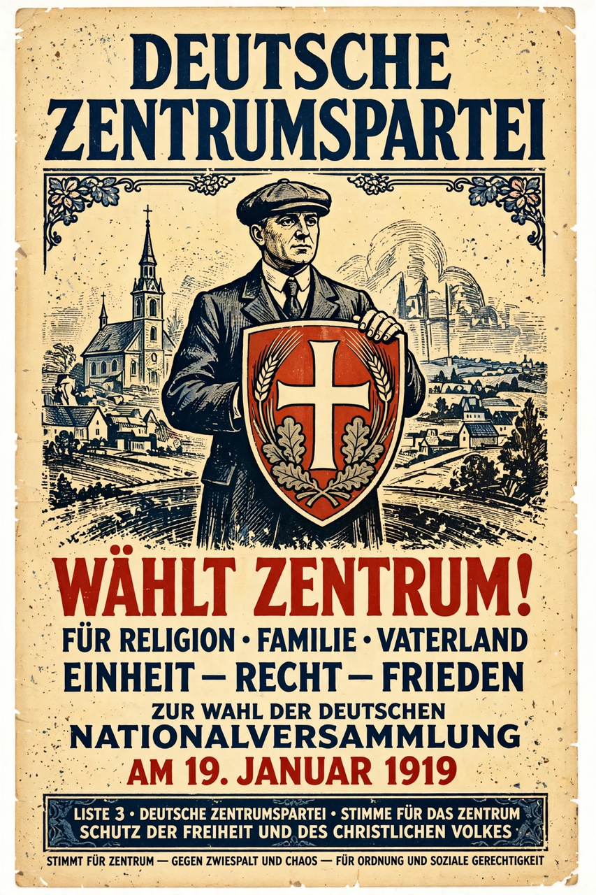

From Wikipedia, the free encyclopedia
| German Centre Party | |
|---|---|
 German Centre Party (Deutsche Zentrumspartei) | |
| Founded | 13 December 1870 |
| Dissolved | 5 July 1933 (self-dissolution); refounded 1945 |
| Ideology | Political Catholicism; Christian democracy |
| Key figures | Ludwig Windthorst, Matthias Erzberger, Wilhelm Marx, Heinrich Brüning, Ludwig Kaas |
| Headquarters | Berlin |
The German Centre Party (German: Deutsche Zentrumspartei) was a lay political party of German Catholics, founded in 1870 during the German Empire. It represented the Catholic minority — roughly a third of the population — and for six decades was a pivotal force in German politics: the chief target of Bismarck's Kulturkampf in the 1870s, a governing party of the Weimar Republic, and the party of Chancellor Heinrich Brüning during the early Depression.
Formed to defend Catholic rights against the Protestant-dominated Prussian state, the party under Ludwig Windthorst resisted the Kulturkampf's anti-Catholic laws and became the Reichstag's pivot party, its votes courted by successive chancellors. It drew support across class lines — clergy, workers, peasants, and Rhineland industrialists — united by confession rather than a single economic programme.
In 1919 the Centre entered the Weimar coalition with the SPD and the liberals, and its Matthias Erzberger signed the Armistice and drove through financial reforms (he was assassinated by right-wing extremists in 1921). Centre politicians held the chancellorship for much of the republic — Wilhelm Marx, and finally Heinrich Brüning (1930–1932), whose deflationary rule by emergency decree under President Paul von Hindenburg deepened the Republic's crisis. From 1928 the party was led by the prelate Ludwig Kaas, who moved it rightward.
In March 1933, after Hitler's appointment, the Centre's deputies — fearful for the Church's position and promised guarantees — voted for the Enabling Act in the Kroll Opera House, the decisive step in dismantling the Reichstag's authority. In July 1933, as the Reichskonkordat with the Vatican was negotiated, the party dissolved itself under Nazi pressure, the last of Germany's major parties to do so.
A Centre Party was refounded in 1945, but most of its constituency and many of its leaders — including Konrad Adenauer — moved to the interconfessional Christian Democratic Union, and the Centre dwindled to a minor regional party. Its legacy lives on in German Christian democracy and in the tradition of political Catholicism.